Circos (Krzywinski et al. 2009) is a software package for visualizing data in a circular layout. This makes Circos ideal for exploring relationships between objects or positions. Circos plots have appeared in thousands of scientific publications. Although originally designed for visualizing genomic data, it can create figures from data in any field.
In this tutorial you will learn how to create such publication-ready Circos plots within Galaxy, and hopefully you can draw inspiration from these for developing your own plots.
Circos supports various different plot types, such as histograms, scatter plots and heat maps. Each Circos plot may contain multiple tracks containing different sub-plots, making it ideal for visualisation of high-dimensional data.
Circos is an Iterative Process
Publication quality circos plots are rarely produced on the first try. Developing a quality Circos plot involves a lot of trial and error to find the best way to convey specific pieces of your data to your audience. Usually you will build up the circos plot one track at a time, and play around with different parameter settings until the plot looks exactly like you want it to:
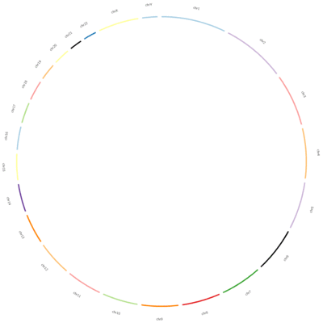Figure 1: Circos plots are an iterative process, requiring many iterative steps, each improving your plot and getting you closer to a final image.
Circos is an extremely flexible but also very complex tool. The Galaxy Circos tool covers the most commonly used Circos features, but in order to avoid becoming too complex, it does not expose every single configuration option available in Circos. However, the Galaxy Circos tool allows you to download the full set of configuration files it uses, allowing you to manually tweak the plot further.
comment Comment: Circos tutorials
To learn more about using Circos outside of Galaxy (e.g. for tweaking the
Circos configuration output by the Galaxy tool), there are a wide range
of tutorials available from the Circos website
Circos Basics
Ideogram
The ideogram depicts your major data classes. For genomics data this is usually chromosomes, but could also be species, or genes, or another resolution level depending on what relationships you want to show. For non-genomic data this could be individuals in a population, countries, or any other major facet of your data that you want to use for grouping.
Figure 2: The ideogram shows the objects for which you will plot data. Cytogenic bands can be shown as needed and when available.
Data Tracks
Within this ideogram, we can plot data tracks. There are different plot types available, such as scatterplots, histograms, heatmaps, and link tracks. Below is a list of the main track types with example images:
Example
Description
Scatter plot track type. All data points are indicated by a glyph (shape).
Data format: four or five columns, tab separated. While Circos accepts space or tab separated, to use Galaxy's data manipulation tools you will need tab separated data. The attributes colum is completely optional but can be used to override colours, or provide extra context like "strand" or something else on which it might be diserable to filter. The format is key=value,key2=value2,...
Chromosome
Start
End
Value
Attributes (optional)
chrX
0
7499999
50
chrX
7500000
14999999
100
fill_color=red
chrX
15000000
22499999
-25
fill_color=(140,104,137)
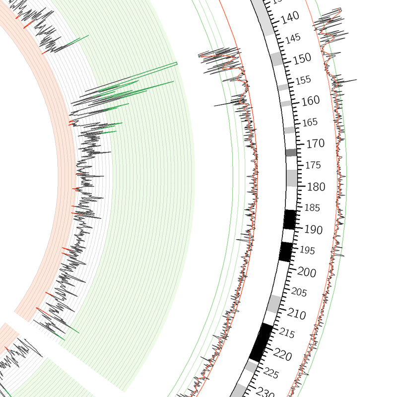
Line plot track type. Data points are connected by a line.
Data format: identical to scatter plot.
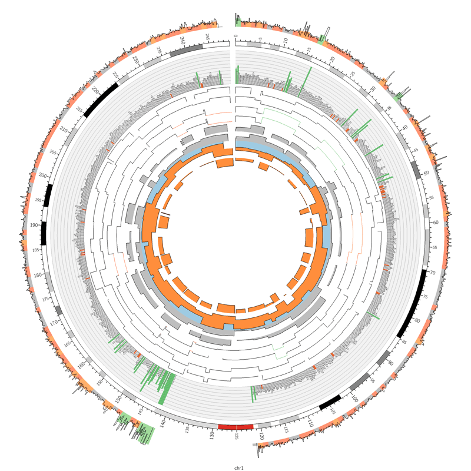
Histogram track type. Data points are connected to form a step-like trace.
Data format: identical to scatter plot.
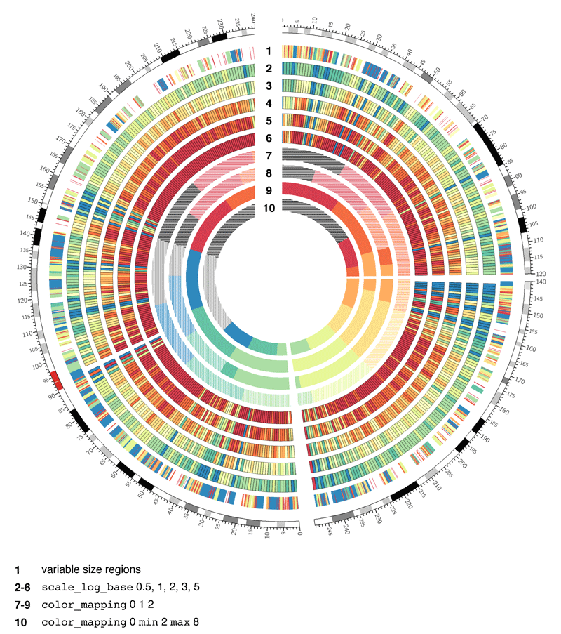
Heatmap track type.
Data format: identical to scatter plot.
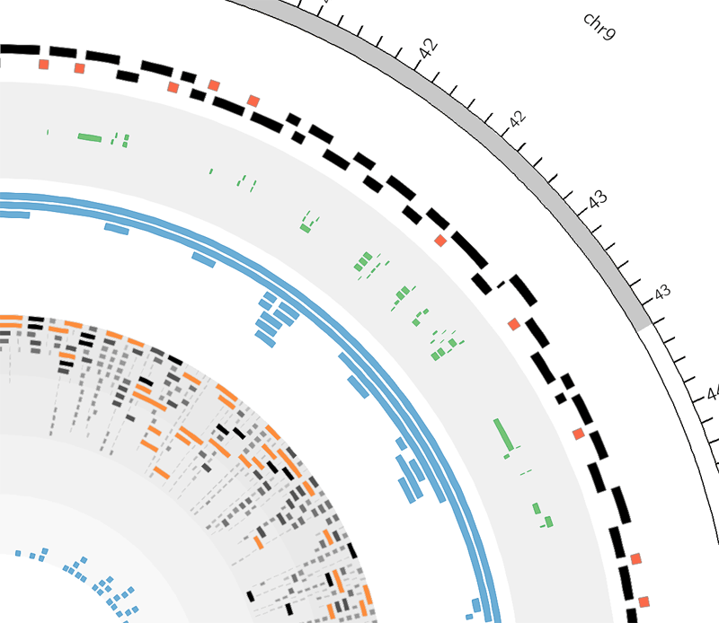
Tile track type. This is useful to indicate a range of the chromosome, for example to show genes, reads, repeat regions, etc.
Data format: four or five columns, similar to scatter plot but instead of a value or a score, we have a text label that can be displayed.
Chromosome
Start
End
Label
Attributes (optional)
chr1
10119128
10345073
C_994
id=Conrad_994
chr1
10171406
10415218
M_1535
id=McCarroll_1535
chr1
103351772
103448763
M_5507
id=Mills_5507
Text track type. Text may also be added to a plot, for instance to indicate names of impacted genes.
Data format: identical to tiles plot.
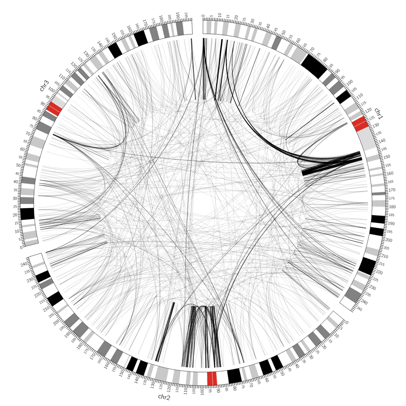
Link track type. Relationship between objects can be indicated by a line between them.
Data format 1: six or seven columns, including the optional attribute column.
Chromosome 1
Start 1
End 1
Chromosome 2
Start 2
End 2
Attributes (optional)
chrX
87655109
107655109
chr12
109275831
129275831
color=blue,value=0
chrX
73701156
93701156
chr22
26513447
46513447
color=green,value=1
chr12
121879007
132349534
chr7
43840633
63840633
color=red,value=2
Data format 2: four or five columns, including the optional attribute column.
Link ID
Chromosome
Start
End
Attributes (optional)
link_0
chrX
87655109
107655109
color=red
link_0
chr12
109275831
129275831
color=blue
link_1
chrX
73701156
93701156
color=green
link_1
chr22
26513447
46513447
color=black
Ribbons are a type of link track. These can be coloured and twisted as desired.
Data format: identical to links.
Tracks can be customized a lot, some relevant concepts are:
Radius of the track determines its location between the center (0) and the ideogram (1).
Rules can be defined to change for example the color of data points depending on the value of the data points.
Axes and backgrounds can be drawn on a data track
There are a lot of further customizations available within Circos, but in this tutorial, we will start with the basics.
Tutorial Overview
We will now illustrate Circos further with a number of example plots. Each of these can be run independently of each other, so feel free to pick an example that suits your interest. If this is your first time using Circos, we suggest doing the examples in order.
Create a plot using data from a cancer cell line. This tutorial will guide you through the iterative process of building your first Circos image, and covers some cancer background as well.
To show that Circos can be used for non-genomics data as well, this example recreates a plot that appeared in the New York times, visualizing data of the presidential debates.
In this section, we will recreate a Circos plot of the VCaP cancer cell line presented in Alves et al. 2013. In this study, data from various sources were combined into a single integrative Circos plot.
Figure 3: Circos plot of the VCaP cancer cell line displaying from the outside in: copy number variation, B-allele frequency, structural variants
This plot has 4 tracks:
Structural variants (2 tracks, data obtained from whole-genome NGS sequencing data)
B-allele Frequency (obtained from SNP array data)
Copy Number (obtained from SNP array data)
In this section we will reproduce this Circos plot step by step.
Data upload
hands_on Hands-on: Obtaining our data
Make sure you have an empty analysis history. Give it a name.
tip Tip: Creating a new history
Click the new-history icon at the top of the history panel
If the new-history is missing:
Click on the galaxy-gear icon (History options) on the top of the history panel
Select the option Create New from the menu
Import DataTool: upload1
Import the sample data files to your history, either from a shared data library (if available), or from Zenodo using the following URLs:
Open the Galaxy Upload Manager (galaxy-upload on the top-right of the tool panel)
Select Paste/Fetch Data
Paste the link into the text field
Press Start
Close the window
By default, Galaxy uses the URL as the name, so rename the files with a more useful name.
tip Tip: Importing data from a data library
As an alternative to uploading the data from a URL or your computer, the files may also have been made available from a shared data library:
Go into Shared data (top panel) then Data libraries
Find the correct folder (ask your instructor)
Select the desired files
Click on the To History button near the top and select as Datasets from the dropdown menu
In the pop-up window, select the history you want to import the files to (or create a new one)
Click on Import
Ideogram
As the first step to this Circos plot, let’s configure the ideogram (set of chromosomes to draw). You can use one of the built-in genomes, or you can supply your own karyotype file.
hands_on Hands-on: Set ideogram configuration
CircosTool: toolshed.g2.bx.psu.edu/repos/iuc/circos/circos/0.69.8+galaxy7 visualizes data in a ciruclar layout with the following parameters:
Chromosome definitions are formatted as follows: chr - ID LABEL START END COLOR
The first two fields are always chr, indicating that the line defines a chromosome, and -. The second field defines the parent structure and is used only for band definitions.
The ID is the identifier used in data files whereas the LABEL is the text that will appear next to the ideogram on the image.
The start and end values define the size of the chromosome. The karyotype file should store the entire chromsome size, not just the region you wish to draw.
There are other parameters we can use to draw only a subset of the data (e.g. just one chromosome).
The color parameter is optional, to use built-in color scheme, use chr1, chr2. etc again in this column
More information about this format (including karyotype definitions for several species) can be found on the Circos website
question Question
Why didn’t we use the hg18 built-in genome (using the Locally Cached option)?
solution Solution
These built-in definitions often include more than the canonical chromosomes (chr1-chr22, chrX, chrY), which we might not want to plot. For example, using
The full definition of hg18 built-in to Galaxy, we get the following ideogram:
We could still use this karyotype, but we would have to limit the chromosomes to be drawn in the Circos settings (we will cover this later). In this example however, we supply our own karyotype file defining only the canonical chromosomes.
Structural Variations
The first data track we will configure, will be the structural variants (SVs) using the link track type in Circos. We will colour the links differently depending on whether the SVs are intrachromosomal (within a single chromosome) or interchromosomal (between different chromosomes).
comment Background: Structural Variants
Structural variants (SVs) are large-scale genomic rearrangements. SVs involve large segments of DNA (>50 bp) that are deleted, duplicated, translocated or inverted.
One of the first observations of SVs in the human genome is known as the Philadelphia Chromosome, a SV observed in leukemia. In this mutation, a translocation of genetic material occurs between chromosomes 9 and 22, resulting in a fusion between genes BCR and ABL1, causing the production of a hybrid protein, impairing various signalling pathways and causing the cell to divide uncontrollably.
Figure 5: The Philadelphia chromosome
In cancer analyses it is therefore often useful to examine SVs and look for potential fusion genes that may affect cell function.
SVs are usually described in terms of the SV breakpoints (or junctions); sets of genomic locations which are separated by a large distance on the reference genome, but have become adjacent in the sample through the occurrence of structural variants. Unfortunately, there is no standard file format for SV data, with different SV callers outputting different formats. Therefore, our first step will be to transform our input dataset to the Circos format for link tracks.
Cut columns from a table tool with the following parameters:
“Cut columns”: c2,c3,c3,c6,c7,c7
param-file“From”: output of Selecttool
Renamegalaxy-pencil this output to SVs Circos.tsv
Now that we have the correct format, we can plot our data in Circos. We will plot the SVs as links; showing which parts of genome have been fused together in our sample.
Given that Circos is a very complex with dozens of parameters to set, we re-run previous circos runs to build on the existing configuration we have done, without losing the progress and having to re-specify parameters every time.
hands_on Hands-on: Add Circos link track for SVs
Click Re-rungalaxy-refresh on the previous Circos tool run (Circos Plot ideogram)
Add a new Link Track for the SV data, colouring by SV type:
In “Link Tracks”:
In “Link Data”:
param-repeat“Insert Link Data”
“Inside Radius”: 0.95
param-file“Link Data Source”: SVs Circos.tsv
“Link Type”: basic
“Thickness”: 3.0
“Bezier Radius”: 0.5
In “Rules”:
In “Rule”:
param-repeat“Insert Rule”
In “Conditions to Apply”:
param-repeat“Insert Conditions to Apply”
“Condition”: Interchromosomal
In “Actions to Apply”:
param-repeat“Insert Actions to Apply”
“Action”: Change Link Colour
“Link Color”:       (red)
Renamegalaxy-pencil the output Circos Plot SVs
Your output should look something like this:
Figure 6: SVs on the VCaP cell line. Red lines indicate interchromosomal SVs, where pieces originating from different chromosomes have fused together. Black lines show breaks withing in single chromosome.
question Questions
Are there more interchromosomal or intrachromosomal SVs?
Which chromosome appears to have the most SVs?
solution Solution
Interchromosomal SVs (between different chromosomes) are coloured red in this
plot, while SVs within a single chromosome are coloured black. By plotting the data with Circos, you can now easily see
at a glance that there are more intrachromosomal SVs (black) than interchromosomal SVs (red).
Chromosome 5 appears to have a lot more SVs than the other chromosomes (it looks almost completely black!)
We see from this image that chromosome 5 has an unusually large number of SVs, let’s look at that chromosome more closely, by limiting the chromosomes Circos should draw:
hands_on Hands-on: Plot only Chromosome 5
Hit Rerungalaxy-refresh on the previous Circos tool run
Change the following tool parameters:
In “Ideogram”:
“Limit/Filter Chromosomes”: chr5
You should see a plot like:
Figure 7: Chromosome 5 of the VCaP cancer cell line. The q arm of this chromosome appears to be affected by an unusually large number of SVs
question Questions
Are there indeed significantly more SVs on chromosome 5 than on the other chromosomes? (hint: plot some of the other chromosomes as well)
Are the SVs equally distributed over chromosome 5? Can you think of an explanation for this?
solution Solution
Yes, plotting for example only chromosome 1 (left) and comparing this with the chromosome 5 plot (right), reveals that chr5 has abnormally high number of SVs compared to the other chromosomes
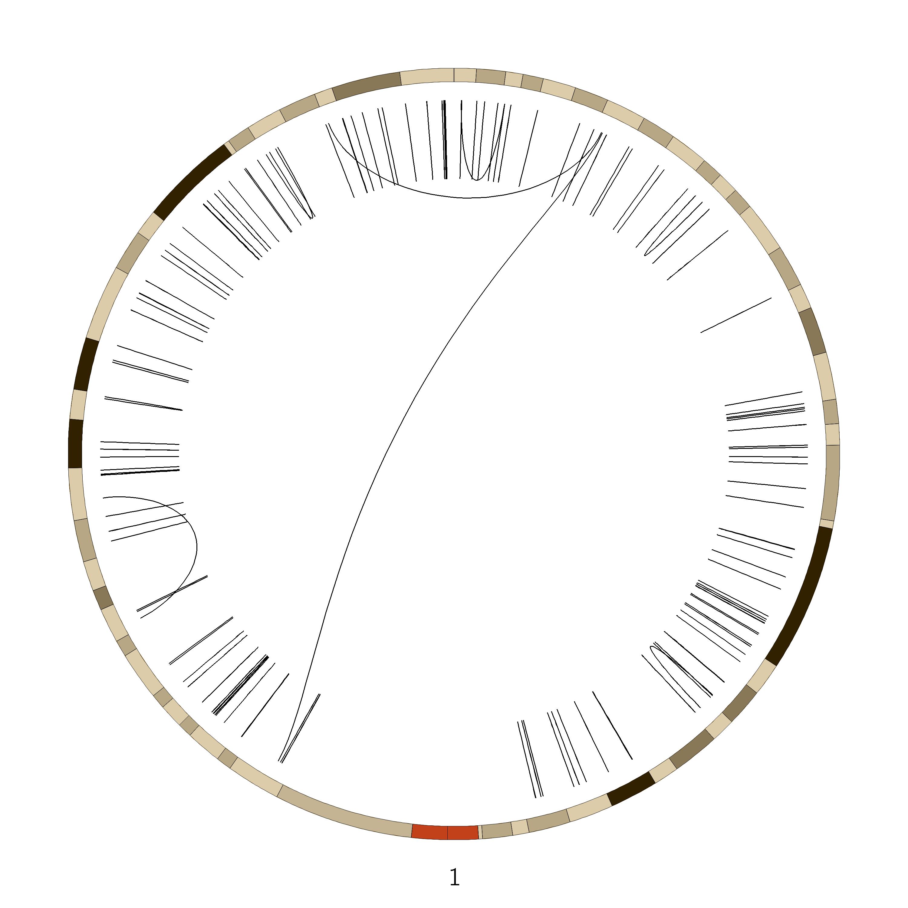
No, only part of chromosome 5 appears to be affected. It turns out that this region is exactly one arm of the chromosome.
This could be caused by a phenomenon known as chromothripsis (see next box).
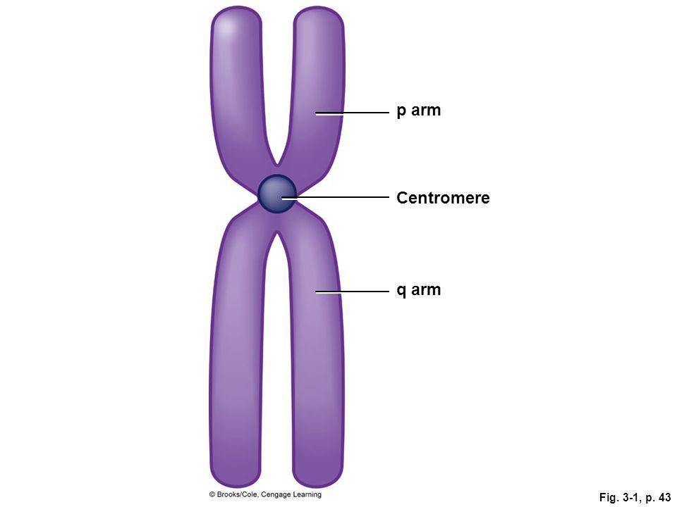Figure 8: The different arms of a chromosome. The short arm is termed p, the long arm is q. In our sample, the 5q arm appears to be affected by chromothripsis
comment Background: Chromothripsis
Chromothripsis is a phenomenon whereby (part of) a chromosome is shattered in a single catastrophic event, and subsequently imprecisely stitched
together by the cell’s repair mechanisms. This leads to a huge number of SV junctions.
Figure 9: Chromothripsis is a scattering of the DNA, followed by an imprecise repair process, leading to many structural rearrangements.
Characteristics of chromothripsis:
Large numbers of complex rearrangements in localised regions of single chromosomes or chromosome arms (showed by high density and clustered breakpoints) which suggests that chromosomes need to be condensed e.g. in mitosis for chromothripsis to occur.
Low copy number states- alternation between 2 states (sometimes 3) suggesting that rearrangements occurred in a short period of time.
In chromothriptic areas you get alternation of regions which retain heterozygosity-two copy (no loss or gain), with regions that have loss of heterozygosity- one copy (heterozygous deletion). This suggest that the rearrangements took place at a time that both parental copies of the chromosome were present and hence early on the development of the cancer cell.
By visualizing the SVs, we have observed characteristic 1 of the list above; large number of complex rearrangements in a localised regon of a single chromosome arm, one of the main features of chromothripsis. In order to confirm we are indeed dealing with chromothripsis, we will next look plot copy number data and B-allele frequency data (both obtained from microarrays) to ascertain whether we observe the expected patterns in copy number states and heterozygosity.
Copy Number Variation
Next, we will create a track displaying copy number. This data comes from Affymetrix SNP arrays.
comment Background: Copy Number Variation (CNV)
The human genome is a diploid genome, meaning there are 2 copies of each chromosome, one paternal, and one maternal. This means that for any given gene, humans have two different copies of it in our genome.
Some structural variants will lead to a change in this copy number, for example duplications and deletions. Other SVs (such as inversions and translocations) do not result in a change in copy number, since the piece of DNA is just moved, but the number of copies of it remains the same.
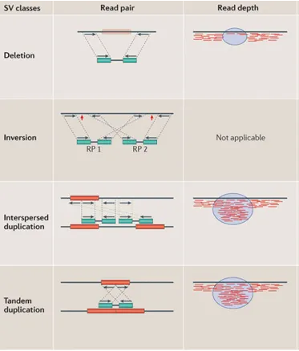Figure 10: Duplications and deletions lead to a change in copy number, measurable by a change in read depth. Other SVs such as inversions are copy-number neutral.
In a healthy diploid genome, we expect the copy number to be around 2 in most places, with occasional duplications and deletions which are part of
the normal variation within the human population. In highly rearranged genomes such as cancer we expect to see a lot more copynumber variation.
comment Background: DNA Microarrays
Microarrays are used to measure the expression levels of large number of genes simultaneously, or to genotype multiple regions of a genome. In this example in our tutorial, we have data from a SNP array. This type of microarray detects the presence and proportion (homozyogous/heterozygous) of a
wide range of SNPs (Single Nucleotide Polymorphisms) known to exist within the population. A set of probes targeting positions of a large number of known SNPs
are used to detect the presence or absence of the SNPs in the sample.
Each SNP location is covered by 2 probes (one for the reference allele, and one for the variant allele). By comparing their combined intensity to the expected intensity (e.g. the sample average), a measure known as the Log R ratio, we can learn something about copy number. The resulting plots often look something like this:
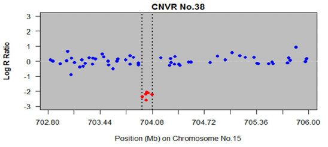
With a value of 0 indicating the normalized copy number (2 in the case of a diploid genome), and significant diversions from this expected value
point to copy number gains or losses (the figure above shows 1 region with a copy number loss).
Let’s look at our file format (VCaP-copynumber.txt`):
The Value column indicates the copy number state, and is always between -1 and 1. the position has expected copy-number (0), indicating 2 copies in the case of diploid genomes, or whether it has a copy number loss (negative values) or a gain in copy number (positive values).
This is pretty close to the format expected by Circos for 2D data tracks (chr - start - end - value), all we need to do to prepare this file is remove the first header line, and remove column 5. Furthermore, because this file is quite large, we do a subsampling down to 25000 lines; this is enough to get a genome-level overview of the data, but small enough that Circos will complete plotting quickly.
hands_on Hands-on: Prepare CNV input file
Remove beginningTool: Remove+beginning1 of a file with the following parameters:
“Remove first”: 1
param-file“from”: VCaP copy number.tsv
CutTool: Cut1 columns from a table with the following parameters:
“Cut columns”: c1,c2,c3,c4
param-file“From”: output of Remove beginningtool
Select random linesTool: random_lines1 with the following parameters:
“Randomly select”: 25000
param-file“from”: output of Cuttool
Renamegalaxy-pencil the output file cnv-circos.txt
Now that our file is prepared, we can add a track to our Circos image. We will create a scatterplot, and colour each data point depending on copy number state (green=gain, red=loss)
hands_on Hands-on: Add Copy Number track to Circos
Hit Rerungalaxy-refresh on the Circos plot containing the SV track tool run (Circos Plot SVs)
Add a new scatterplot track to the image
In “2D Data Tracks”:
param-repeat“Insert 2D Data Plot”
“Outside Radius”: 0.95
“Inside Radius”: 0.8
“Plot Type”: Scatter
“Scatter Plot Data Source”: cnv-circos.txt
In “Plot Format Specific Options”:
“Glyph Size”: 4
“Color”:       (gray)
“Stroke Thickness”: 0
“Minimum / maximum options”: Supply min/max values
“Minimum value”: -1.0
“Maximum value”: 1.0
Examinegalaxy-eye the resulting plot
question Question
Examine the resulting plot, what do you see?
How could we solve this?
solution Solution
We see the new track, but it overlaps with the SV track. This is because we used the same radius parameter.
This parameter determines the position of the track within the plot.
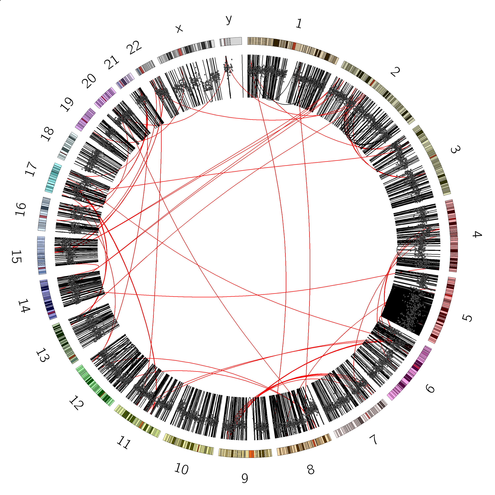
To fix this, we can rerun the Circos tool, and change the radius of the link track (SVs) to be inside the new copynumber track (<0.8).
We will do this in the next step. This is what we mean by Circos being an iterative process; the tool is too complex to define a multitrack plot
all at once, rather, you build it up step by step and frequently check the output.
Rerungalaxy-refresh the tool, changing the following parameters.
In “Link Tracks”:
In “1: Link Data”:
“Inside Radius”: 0.75
You should see a plot that looks like:
Now that we are happy with the placement of our track, let’s tweak it a bit more. Let’s colour positions showing a significant copy number loss (< -0.15) red, and positions with a copy number gain (> 0.15) green, leaving everything inbetween gray (expected copy number):
hands_on Hands-on: Colour data points by copy number state
Hit Rerungalaxy-refresh on the previous Circos tool run
In the 2D data track of the CNV track we just created, add the following rules:
In “Rules”:
param-repeat“Insert Rule”
In “Conditions to Apply”:
param-repeat“Insert Conditions to Apply”
“Condition”: Apply based on point value
“Points above this value”: 0.15
In “Actions to Apply”:
param-repeat“Insert Actions to Apply”
“Action”: Change Fill Color for all points
“Fill Color”:       (green)
param-repeat“Insert Rule”
In “Conditions to Apply”:
param-repeat“Insert Conditions to Apply”
“Condition”: Apply based on point value
“Points below this value”: -0.15
In “Actions to Apply”:
param-repeat“Insert Actions to Apply”
“Action”: Change Fill Color for all points
“Fill Color”:       (red)
Sometimes it can also be nice to see the axes of the plot, to more accurately judge the values of the different data points.
We can do this as follows:
hands_on Hands-on: Add plot axes
Hit Rerungalaxy-refresh on the previous Circos tool run
In the 2D data track of the CNV track we just created, add plot axes as follows:
In “Axes”:
In “Axis”:
param-repeat“Insert Axis”
“Inside Radius”: -1
“Outside Radius”: 1
“Color”:       (gray)
“Spacing”: 0.25
Renamegalaxy-pencil the output Circos Plot CopyNumber
You should now see a plot like this:
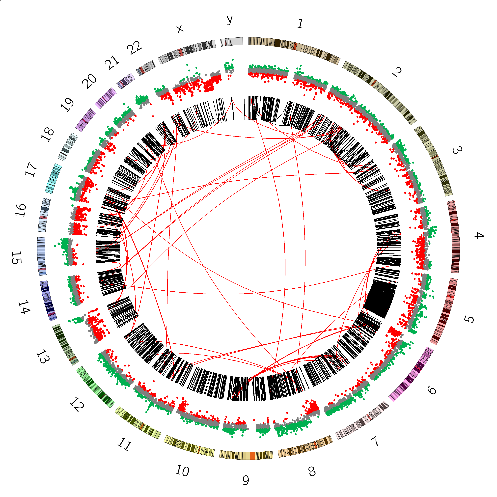
B-allele Frequency
Next, we will visualize the B-allele frequency (also known as minor allele frequency)
comment Background: B-allele Frequency (BAF)
The B-allele frequency is closely related to copy number. There are many nuances to the measurement of B-allele frequency,
but roughly speaking it indicates the frequency (ratio) of the non-reference allele of the SNP within the sample
This can be used to estimate copy number changes; in a diploid genome we expect to observe 3 states:
SNP is present in 100% of the probes (homozygous variant)
SNP is present in 0% of the probes (homozygous reference)
SNP is present in 50% of the probes (heterozygous)
By plotting this percentage, we get our B-allele frequency plot:
Figure 11: expected B-allele frequency plot (top) and Log R ratio plot (bottom) for different copy number states
When these SNPs are detected at different ratios, it may indicate copy number variation. For example, a region displaying SNP ratios of 33% and 66% may indicate a copy number of 3 for that region (see image above).
Now we will add such a B-allele frequency plot as track in our Circos visualization.
The data we will use for this is also obtained from SNP array data, and looks like this:
Note that the B-allele frequency value is always between 0 and 1.
We will make another scatterplot, so our data should be in the same format as the copynumber track: chr - start - end - value. Luckily, this data is already in the correct format, all we have to do is remove the header line! We will also subset the data again by selecting lines randomly from the file.
hands_on Hands-on: Prepare the B-allele frequency table
Remove beginningTool: Remove+beginning1 with the following parameters:
“Remove first”: 1
param-file“from”: B-allele frequence.tsv
Select random linesTool: random_lines1 with the following parameters:
“Randomly select”: 25000
param-file“from”: output of Selecttool
“Set a random seed”: Don't set seed
Renamegalaxy-pencil this file to baf-circos.tsv
Now are data is ready to be plotted in Circos. We will plot this track directly inside the CNV track, which means we will have to change the radius of the SV link track again as well.
hands_on Hands-on: Add B-allele Frequency track to Circos
Hit Rerungalaxy-refresh on the previous Circos tool run (Circos Plot CopyNumber)
Add a new scatterplot track to the image
In “2D Data Tracks”:
param-repeat“Insert 2D Data Plot”
“Outside Radius”: 0.75
“Inside Radius”: 0.6
“Plot Format”: Scatter
param-file“Scatter Plot Data Source”: baf-circos.tsv (output of Select random linestool)
In “Plot Format Specific Options”:
“Glyph Size”: 4
“Color”:       (gray)
“Stroke Thickness”: 0
“Minimum / maximum options”: Supply min/max values
“Minimum value”: 0.0
“Maximum value”: 1.0
In “Axes”:
In “Axis”:
param-repeat“Insert Axis”
“Spacing”: 0.25
In “Link Tracks”:
In “1: Link Data”:
“Inside Radius”: 0.55
Renamegalaxy-pencil this plot to Circos Plot BAF
You should see a plot that looks like this:
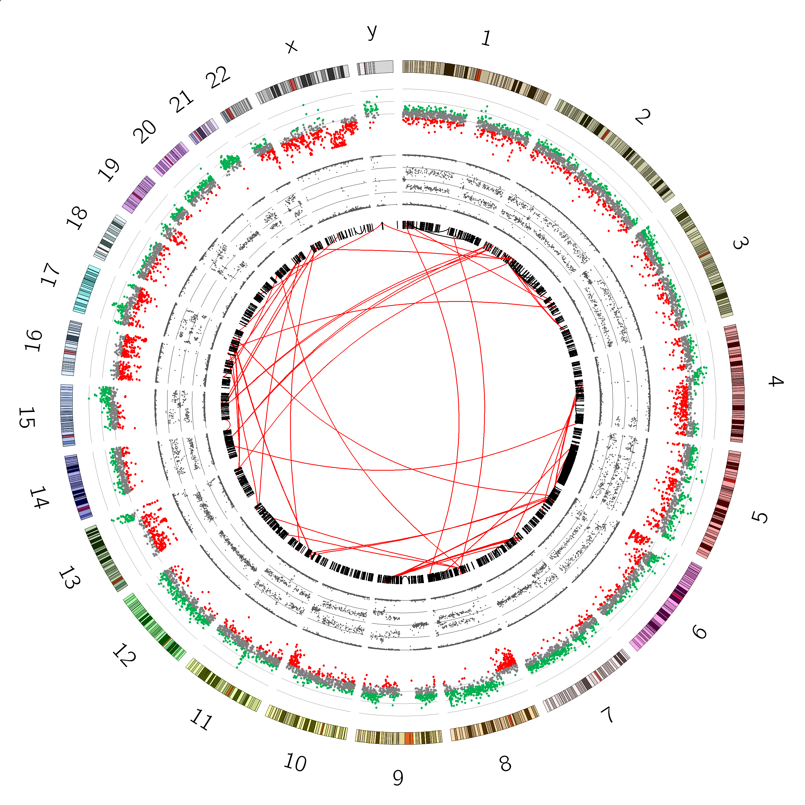
Great! we can see our B-allele frequency plot track added.
question Questions
Look at the B-allele frequency track, try to identify chromosome(s) having a copy number of:
CN=2 (diploid)
CN=1 (haploid)
CN=3 (triploid)
Hint:
Do you see anything other than these states?
solution Solution
Compare the B-allele frequency plot to the expected plot shown above for the different copynumber states.
Chromosome 12 appears completely diploid
Chromosomes 16 and X appear to have only 1 copy (no heterozygosity and a loss in copynumber as shown by the CNV track)
Chromosomes 1,2, and 3 show a pattern consistent with CN=3
Chromosome 5 shows a lot of changes in B-allele frequency. Chromosome 19 displays a pattern that could potentially indicate 4 copies (B-allele frequencies of 0, 0.25, 0.5, 0.75 and 1)
Optional: Final Tweaking of Circos plot
You may have noticed, that by moving the link track closer to the center repeatedly, the track of intrachromosomal links has become rather narrow.
There is a parameter of the link track type called Bezier, which controls how tightly the links arc (i.e. how close to the center they reach. By playing around with this parameter, we can fine a more pleasing
hands_on Hands-on: Change Bezier radius
Hit Rerungalaxy-refresh on the previous Circos tool run (Circos Plot CopyNumber)
Change the Bezier parameter of the SV track:
In “Link Tracks”:
In “1: Link Data”:
“Bezier Radius”: 0.25
Another thing you may have noticed, is that in the original image we showed at the start of this section, the red links (interchromosomal SVs) were displayed as a completely different track. To do this, instead of creating a single track with a rule to change the colour of a subset of the data, we can make 2 separate tracks, with rules to only plot a subset of the data.
question Exercise: Split SV track into two
Try to split the link track in two so that it matches the original image. This may take some trial and error. The full configuration is shown in the answer box below, but we provede some hints if you want to try it yourself first:
Change the existing link track:
instead of a rule to change the colour of interchromosomal SVs, change their visibility (hide them)
Add a new link track
Choose an appropriate radius
Set the link colour to red
Add a rule to hide the intrachromosomal SVs
Figure 12: The original image from the paper. Try to make the two link tracks look like this
solution Solution
The full configuration of the two link tracks is:
hands_on Hands on: Two link tracks
Hit Rerungalaxy-refresh on the previous Circos tool run
Configure two separate link tracks:
In “Link Tracks”:
In “Link Data”:
param-repeat“Insert Link Data”
“Inside Radius”: 0.55
param-file“Link Data Source”: SVs Circos.tsv
“Link Type”: basic
“Thickness”: 1.0
“Bezier Radius”: 0.25
In “Advanced Settings”:
“Bezier Radius Purity”: 1.0
“Perturb links?”: no
In “Rules”:
In “Rule”:
param-repeat“Insert Rule”
In “Conditions to Apply”:
param-repeat“Insert Conditions to Apply”
“Condition”: Interchromosomal
In “Actions to Apply”:
param-repeat“Insert Actions to Apply”
“Action”: Change Visibility
“Show”: No
param-repeat“Insert Link Data”
“Inside Radius”: 0.3
param-file“Link Data Source”: SVs Circos.tsv
“Link Type”: basic
“Link Color”:       (red)
“Thickness”: 2.0
“Bezier Radius”: 0.0
In “Rules”:
In “Rule”:
param-repeat“Insert Rule”
In “Conditions to Apply”:
param-repeat“Insert Conditions to Apply”
“Condition”: Intrachromosomal
In “Actions to Apply”:
param-repeat“Insert Actions to Apply”
“Action”: Change Visibility
“Show”: No
Awesome! You have now created a publication-quality Circos plot within Galaxy! There are more example plots in the sections below if you would like to get some more practice with the tool.
Example: Presidential Debate
Circos was originally developed for genomics data, and a lot of the terminology in the tool is reminiscent of genomics (karyotype, ideogram, chromosome), but Circos can be used to plot any type of data. To illustrate this, the next example involves recreating a plot that appeared in an article in the New York Times, visualizing the 2008 presidential debates.
Figure 13: Plot showing how many times each presidential candidate mentioned each other candidate in the debates leading up to the 2008 US presidential election.
Open the Galaxy Upload Manager (galaxy-upload on the top-right of the tool panel)
Select Paste/Fetch Data
Paste the link into the text field
Press Start
Close the window
By default, Galaxy uses the URL as the name, so rename the files with a more useful name.
tip Tip: Importing data from a data library
As an alternative to uploading the data from a URL or your computer, the files may also have been made available from a shared data library:
Go into Shared data (top panel) then Data libraries
Find the correct folder (ask your instructor)
Select the desired files
Click on the To History button near the top and select as Datasets from the dropdown menu
In the pop-up window, select the history you want to import the files to (or create a new one)
Click on Import
Ideogram
Ideograms can be used to depict any axes, not just a stretch of genomics sequence like a chromosome. In this example, each segment corresponds to a candidate’s total word count during all the debates.
The karyotype file (debate_karyotype.tab) defines these segments:
chr - obama OBAMA 0 2000 dem
chr - richardson RICHARDSON 0 1000 dem
chr - clinton CLINTON 0 1500 dem
chr - mccain MCCAIN 0 1000 rep
chr - romney ROMNEY 0 1750 rep
chr - huckabee HUCKABEE 0 1250 rep
In this example, Obama spoke 2000 words, Richardson spoke a total of 1000 words, etc. These are not the real values, but we are using them as an example.
The last column indicates the party of each candidate (democratic or republican), and will be used for the color of the segments.
Let’s start by creating the ideogram for our plot:
hands_on Hands-on: Set ideogram configuration
CircosTool: toolshed.g2.bx.psu.edu/repos/iuc/circos/circos/0.69.8+galaxy7 with the following parameters:
Renamegalaxy-pencil the output Circos Plot karyotype
tip Tip: Renaming a dataset
Click on the galaxy-pencilpencil icon for the dataset to edit its attributes
In the central panel, change the Name field
Click the Save button
The resulting file should look something like this:
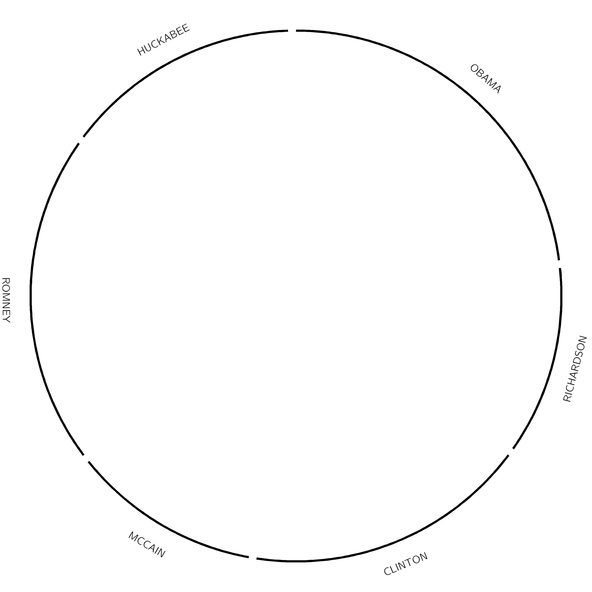
That looks right, but we want to colour each candidate’s segment according to their party. We will do this using a highlights track.
Highlights track
This highlights track shows a highlight for each debate, in the color of their party (blue for democrat, red for republican). The size of each highlight indicates the number of words spoken by the candidate in each debate. The file debate_slices.tab contains this information and looks like this:
It is of format segment - start - end, with an optional 4th column, which can contain some additional Circos parameter settings.
Now, let’s use this file to create our highlights track
hands_on Hands-on: Add Highlights track to Circos Plot
Hit Rerungalaxy-refresh on the previous Circos tool run (Circos Plot karyotype)
Add highlights to the ideogram:
In “Highlights”:
param-repeat Insert Highlight:
“Outside Radius”: 1
“Inside Radius”: 0.9
param-file“Highlight Data Source”: debate_slices.tab
“Fill Color”:       (light red)
In “Rules”:
param-repeat Insert Rule
In “Conditions to Apply”:
param-repeat“Insert Conditions to Apply”
“Condition”: Check for presence/absence per chromosome
“Contig IDs”: obama|richardson|clinton
In “Actions to Apply”:
param-repeat“Insert Actions to Apply”
“Action”: Change Fill Color for all points
“Fill Color”:       (light blue)
Renamegalaxy-pencil the output Circos Plot highlights
Great! All that is left to do now is add a link track. One line will be drawn for each time a candidate mentioned another candidate’s name.
Link Track
The data is stored in the file named debate_links.tab:
obama 150 150 clinton 750 750
mccain 875 875 clinton 750 750
huckabee 525 525 clinton 750 750
The format is segment start end segment start end. The first line indicates that Obama mentioned Clinton in a debate.
Let’s add it to our plot:
hands_on Hands-on: Add Highlights track to Circos Plot
Hit Rerungalaxy-refresh on the previous Circos tool run (Circos Plot highlights)
Add a link track:
In “Link Tracks”:
In “Link Data”:
param-repeat“Insert Link Data”
“Inside Radius”: 0.89
param-file“Link Data Source”: debate_links.tab
“Link Type”: basic
“Thickness”: 5.0
question Exercise: Focus on a single
As an exercise, try to add rules to the link track to colour the links red or blue depending on party of the person who spoke (from_chromosom)
The link should be blue for Obama, and red for McCain and Huckabee
Hint 1: since two of the links should be red, and one blue, it is easiest to make red the default colour, and use a rule to change the colour for Obama
Hint 2: use Chromosome as the condition for the rule
Figure 14: Try to make the link track look like this
solution Solution
The full configuration of the rules for the link tracks is:
hands_on Hands on: Two link tracks
Hit Rerungalaxy-refresh on the previous Circos tool run
Add rules to the link track:
In “Link Tracks”:
“Link Color”:       (light red)
In “Rules”:
param-repeat“Insert Rule”
In “Conditions to Apply”:
param-repeat“Insert Conditions to Apply”
“Condition”: Chromosome
“Comparison”: from chromosome
“Chromosome”: obama
In “Actions to Apply”:
param-repeat“Insert Actions to Apply”
“Action”: Change Link Color
“Link Color”:       (light blue)
Great work! You have now created a Circos plot with non-genomics data!
The next example will show you how to recreate a Nature cover, if you would like to keep going.
Example: Nature Cover ENCODE
Here we will reproduce the output of the Circos tutorial for producing an image like that which was used on Nature’s Cover:
Figure 15: Nature Cover
Data Formats
The Circos Galaxy tool mostly accepts tabular files. These always have at least three columns chromosome start end.
Get data
hands_on Hands-on: Data upload
Create a new history for this tutorial
Import the files from Zenodo or from the shared data library
Open the Galaxy Upload Manager (galaxy-upload on the top-right of the tool panel)
Select Paste/Fetch Data
Paste the link into the text field
Press Start
Close the window
By default, Galaxy uses the URL as the name, so rename the files with a more useful name.
Rename the datasets
Check that the datatype is tabular for both files
tip Tip: Changing the datatype
Click on the galaxy-pencilpencil icon for the dataset to edit its attributes
In the central panel, click on the galaxy-chart-select-dataDatatypes tab on the top
Select tabular
Click the Change datatype button
Create Plot
We will now create the plot all at once. Normally, this would be a more iterative step-by-step process. The previous examples show how this stepwise approach is normally used, here we just give you all the configuration to create this plot all at once.
tip Tip: Interface Complexity
The interface looks deceptively simple when all of the sections are collapsed, but as you start adding tracks it can be easy to get lost and become overwhelmed, so just go slowly. Do not worry if your plot does not look exactly like the expected output.
hands_on Hands-on: Circos
CircosTool: toolshed.g2.bx.psu.edu/repos/iuc/circos/circos/0.69.8+galaxy7 with the following parameters:
param-file“Highlight Data Source”: highlights.tab
Click on “Insert Highlight”:
In “2: Highlight”:
“Outside Radius”: 0.89
“Inside Radius”: 0.8
param-file“Highlight Data Source”: highlights.tab
In “Rules”:
In “Rule”:
Click on “Insert Rule”:
In “1: Rule”:
In “Conditions to Apply”:
Click on “Insert Conditions to Apply”:
In “1: Conditions to Apply”:
“Condition”: Randomly
“Percentage of bins”: 0.1
In “Actions to Apply”:
Click on “Insert Actions to Apply”:
In “1: Actions to Apply”:
“Action”: Change Fill Color for all points
“Fill Color”:       (light purple)
“Continue flow”: Yes
Click on “Insert Rule”:
In “2: Rule”:
In “Conditions to Apply”:
Click on “Insert Conditions to Apply”:
In “1: Conditions to Apply”:
“Condition”: Randomly
“Percentage of bins”: 0.1
In “Actions to Apply”:
Click on “Insert Actions to Apply”:
In “1: Actions to Apply”:
“Action”: Change Fill Color for all points
“Fill Color”:       (yellow)
“Continue flow”: Yes
Click on “Insert Highlight”:
In “3: Highlight”:
“Outside Radius”: 0.79
“Inside Radius”: 0.7
param-file“Highlight Data Source”: highlights.tab
In “Rules”:
In “Rule”:
Click on “Insert Rule”:
In “1: Rule”:
In “Conditions to Apply”:
Click on “Insert Conditions to Apply”:
In “1: Conditions to Apply”:
“Condition”: Randomly
“Percentage of bins”: 0.2
In “Actions to Apply”:
Click on “Insert Actions to Apply”:
In “1: Actions to Apply”:
“Action”: Change Fill Color for all points
“Fill Color”:       (light purple)
“Continue flow”: Yes
Click on “Insert Rule”:
In “2: Rule”:
In “Conditions to Apply”:
Click on “Insert Conditions to Apply”:
In “1: Conditions to Apply”:
“Condition”: Randomly
“Percentage of bins”: 0.2
In “Actions to Apply”:
Click on “Insert Actions to Apply”:
In “1: Actions to Apply”:
“Action”: Change Fill Color for all points
“Fill Color”:       (yellow)
View galaxy-eye the output PNG file
When this has complete, your output should look similar to the following;
Figure 16: Simplified Nature Cover
Further Editing
Sometimes the plots you create will be very close to what you want for a final image, but might be missing something, or the slightly wrong colour, or something else you want to tweak. We will look at an example of taking the final microbe graphic from above and making some additional changes. This is not a hands-on as installing Circos on your local system is outside of the scope of this tutorial, but if you have Circos installed locally, you’re welcome to follow along.
Re-running the final step of the cancer genomics example:
In outputs, enable the Configuration Archive
You can download this .tar.gz archive, and unpack it.
In this directory, you can run the circos command to rebuild the image locally.
$ circos -conf circos/conf/circos.conf
debuggroup summary 0.16s welcome to circos v0.69-6 31 July 2017 on Perl 5.026001
debuggroup summary 0.17s current working directory /tmp/tmp.LqWqFc7RNW
debuggroup summary 0.17s command /home/hxr/arbeit/circos/circos-0.69-6/bin/circos -conf circos/conf/circos.conf
debuggroup summary 0.17s loading configuration from file circos/conf/circos.conf
debuggroup summary 0.17s found conf file circos/conf/circos.conf
debuggroup summary 0.30s debug will appear for these features: output,summary
debuggroup summary 0.30s bitmap output image ./circos.png
debuggroup summary 0.30s parsing karyotype and organizing ideograms
debuggroup summary 0.39s karyotype has 24 chromosomes of total size 3,080,419,504
debuggroup summary 0.40s applying global and local scaling
debuggroup summary 0.41s allocating image, colors and brushes
debuggroup summary 7.03s drawing 24 ideograms of total size 3,080,419,504
debuggroup summary 7.03s drawing highlights and ideograms
debuggroup summary 7.33s found conf file /home/hxr/arbeit/circos/circos-0.69-6/bin/../etc/tracks/link.conf
debuggroup summary 7.33s process track_0 link circos/conf/../data/links-0.txt
debuggroup summary 7.85s drawing link track_0 z 0
debuggroup summary 9.42s found conf file /home/hxr/arbeit/circos/circos-0.69-6/bin/../etc/tracks/scatter.conf
debuggroup summary 9.42s found conf file /home/hxr/arbeit/circos/circos-0.69-6/bin/../etc/tracks/scatter.conf
debuggroup summary 9.42s processing track_0 scatter circos/conf/../data/data-0.txt
debuggroup summary 23.98s processing track_1 scatter circos/conf/../data/data-1.txt
debuggroup summary 31.57s drawing track_0 scatter z 0 data-0.txt orient out
debuggroup summary 32.48s found conf file /home/hxr/arbeit/circos/circos-0.69-6/bin/../etc/tracks/axis.conf
debuggroup summary 38.92s drawing track_1 scatter z 0 data-1.txt orient out
debuggroup summary 39.84s found conf file /home/hxr/arbeit/circos/circos-0.69-6/bin/../etc/tracks/axis.conf
debuggroup output 46.53s generating output
debuggroup output 47.02s created PNG image ./circos.png (1004 kb)
debuggroup summary,timer 47.02s image took more than 30 s to generate. Component timings are shown above. To always show them, use -debug_group timer. To adjust the time cutoff, change debug_auto_timer_report in etc/housekeeping.conf.
Looking at the extracted files, where possible the configuration files within the archive are annotated with their specific inputs, e.g.:
<plot>
file = data/data-1.txt # baf-circos.tsv
r1 = 0.75r
r0 = 0.6r
orientation = out
min = 0.0
max = 1.0
Hopefully this helps you take your Circos plots from 90% to 100% publication ready! If there are any changes you find yourself making manually very often, please let the tool authors know and maybe they can add that configuration to the Galaxy tool.
Conclusion
Congratulations on finishing this tutorial! You have now seen how you can create Circos plots within Galaxy. Circos is a very flexible tool, but this flexibility also comes with a certain degree of complexity and a steep learning curve. When you are making your own plots, remember that Circos is an iterative process, don’t try to do too much at once, but build your plot up step by step, and check the output often.
keypoints Key points
Circos is an effective tool to make circular visualisation of high-dimensional datasets
Circos is often used for genomics, but can also be used for other types of data
References
Krzywinski, M., J. Schein, I. Birol, J. Connors, R. Gascoyne et al., 2009 Circos: an information aesthetic for comparative genomics. Genome research 19: 1639–1645.
Alkan, C., B. P. Coe, and E. E. Eichler, 2011 Genome structural variation discovery and genotyping. Nature Reviews Genetics 12: 363.
Alves, I. T., S. Hiltemann, T. Hartjes, P. van der Spek, A. Stubbs et al., 2013 Gene fusions by chromothripsis of chromosome 5q in the VCaP prostate cancer cell line. Human genetics 132: 709–713.
Feedback
Did you use this material as an instructor? Feel free to give us feedback on how it went.
Batut et al., 2018 Community-Driven Data Analysis Training for Biology Cell Systems 10.1016/j.cels.2018.05.012
details BibTeX
@misc{visualisation-circos,
author = "Saskia Hiltemann and Helena Rasche",
title = "Visualisation with Circos (Galaxy Training Materials)",
year = "2021",
month = "01",
day = "06"
url = "\url{/training-material/topics/visualisation/tutorials/circos/tutorial.html}",
note = "[Online; accessed TODAY]"
}
@article{Batut_2018,
doi = {10.1016/j.cels.2018.05.012},
url = {https://doi.org/10.1016%2Fj.cels.2018.05.012},
year = 2018,
month = {jun},
publisher = {Elsevier {BV}},
volume = {6},
number = {6},
pages = {752--758.e1},
author = {B{\'{e}}r{\'{e}}nice Batut and Saskia Hiltemann and Andrea Bagnacani and Dannon Baker and Vivek Bhardwaj and Clemens Blank and Anthony Bretaudeau and Loraine Brillet-Gu{\'{e}}guen and Martin {\v{C}}ech and John Chilton and Dave Clements and Olivia Doppelt-Azeroual and Anika Erxleben and Mallory Ann Freeberg and Simon Gladman and Youri Hoogstrate and Hans-Rudolf Hotz and Torsten Houwaart and Pratik Jagtap and Delphine Larivi{\`{e}}re and Gildas Le Corguill{\'{e}} and Thomas Manke and Fabien Mareuil and Fidel Ram{\'{\i}}rez and Devon Ryan and Florian Christoph Sigloch and Nicola Soranzo and Joachim Wolff and Pavankumar Videm and Markus Wolfien and Aisanjiang Wubuli and Dilmurat Yusuf and James Taylor and Rolf Backofen and Anton Nekrutenko and Björn Grüning},
title = {Community-Driven Data Analysis Training for Biology},
journal = {Cell Systems}
}
congratulations Congratulations on successfully completing this tutorial!
 Saskia Hiltemann
Saskia Hiltemann Helena Rasche
Helena Rasche